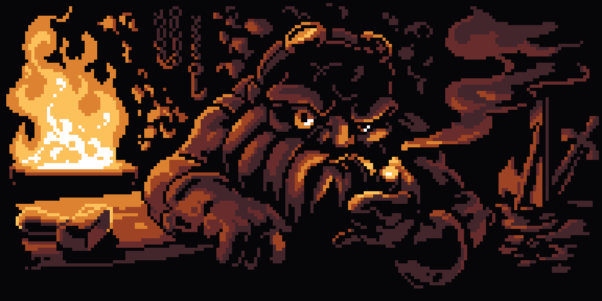
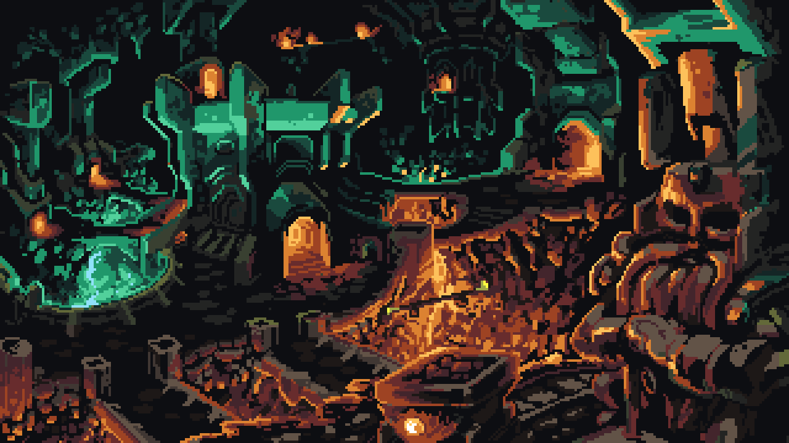
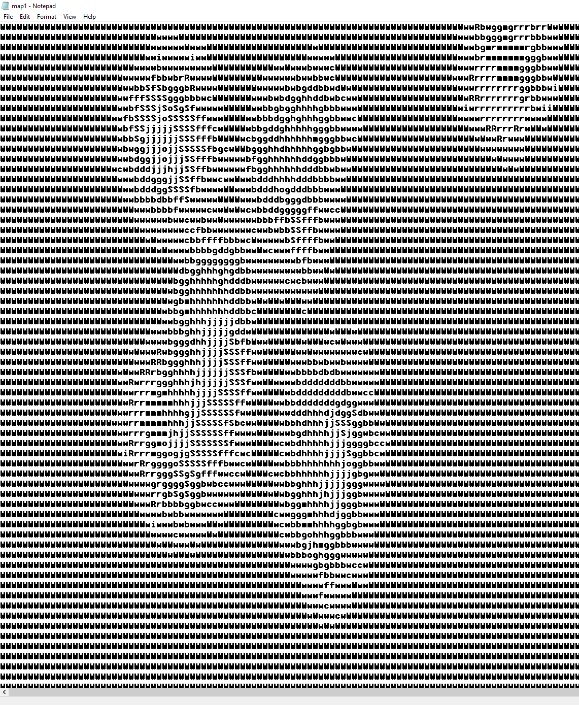
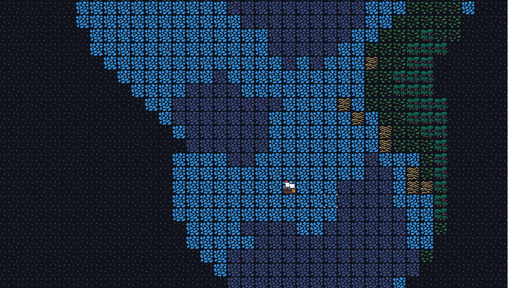

World Generation
I have always loved proceedurally generated games, they scratch an itch no other games can't. Exploring a world no other human has ever seen before is a uniquely novel experience.
Random generation provides a certain magic, the melons you just stumbled across in minecraft may as well of been put there by god himself.
In Dwarf fortress that underground cavern full of mushroom trees and exotic creatures might be 2 blocks below you or 200.
Having it be impossible to know what you will stumble across in these games makes them a unique experience everytime you play them. Perhaps linear games with a carefuly curated experience provide a more polished experience, but that comes at the cost of the players sense of freewill and agency.
Anyhow, I became curious in the alchemy of world generation. After watching dozens of youtube video and reading a few blogs I was finally able to wrap my brain around the concept of hight maps and randomized smoothing. After a few failed attemps and some iteration I was able to write a python script that was outputing something that resembled islands to a .txt file.
The next step was to get this raw data to the display in meaningful way. After drawing some 32x32 pixel tiles and several hours of research I was able to scrape together this.
